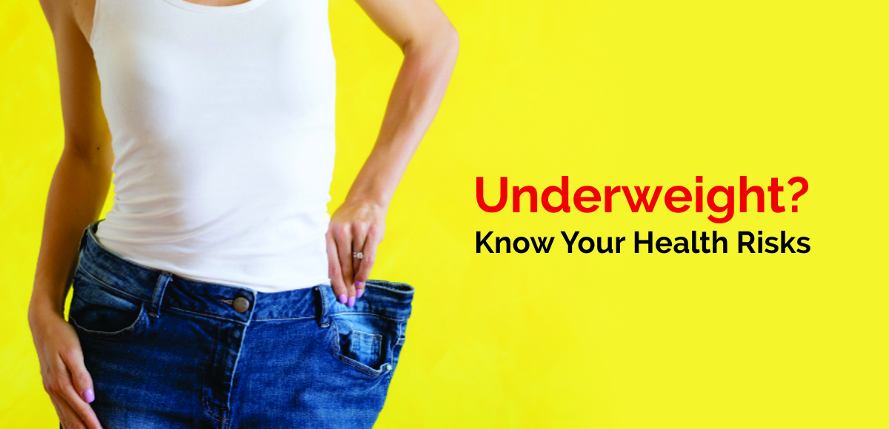
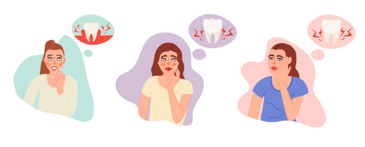
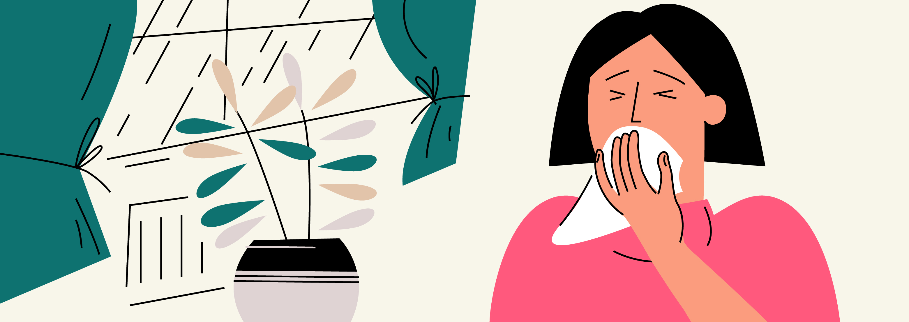
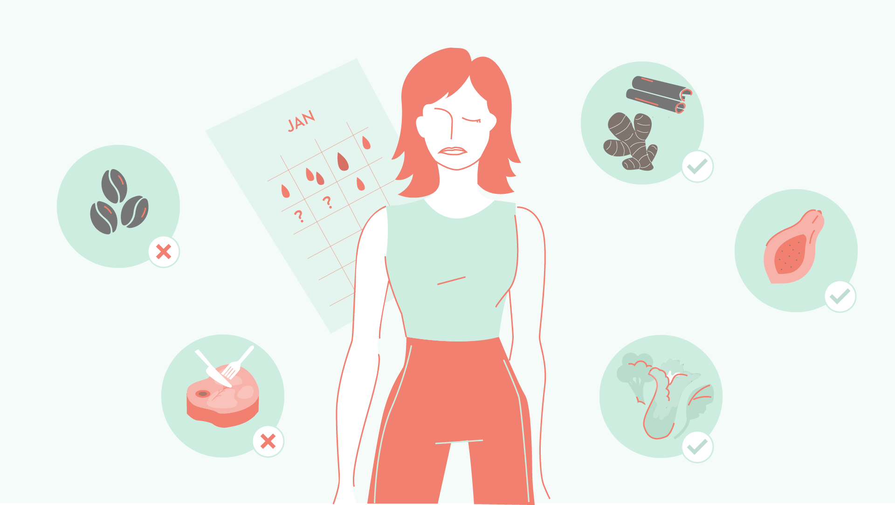
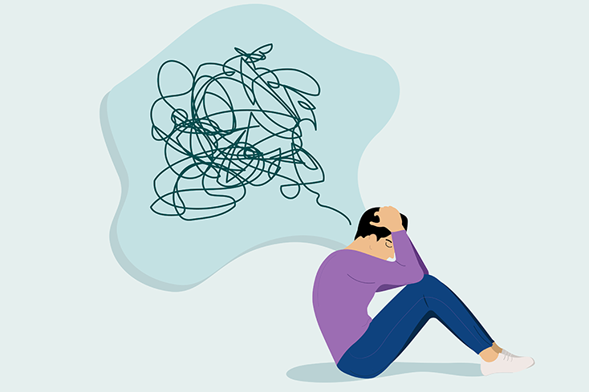

What are the risks of being underweight?
Being underweight can represent as many health concerns to an individual as being overweight can. If a person is underweight, their body may not be getting the nutrients it needs to build healthy bones, skin, and hair.
When is a person underweight?
when the BMI of a person is less then 18.5 than the person is called Under Weight.

Risks of being underweight
Osteoporosis:According to a 2016 studyTrusted Source, being underweight increases a woman’s risk of osteoporosis, which is where the bones are brittle and more prone to breaking.
Skin, hair, or teeth problems:If a person does not get enough nutrients in their daily diet, they may display physical symptoms, such as thinning skin, hair loss, dry skin, or poor dental health.
Getting sick frequently:If a person does not get enough energy from their diet to maintain a healthy body weight, they may also not be getting enough nutrients to fight off infections. As a result, a person may get sick more frequently, and common illnesses, such as a cold, can last longer than they usually would.
Irregular periods:Women who are underweight may not have regular periods, they may find menstruation stops, or an adolescent’s first period may be delayed or absent. Irregular or absent menstruation can cause infertility.
Premature births:According to a study published in An International Journal of Obstetrics & GynaecologyTrusted Source, a woman who is pregnant and underweight is at a higher risk for pre-term labor, which means having a baby before 37 weeks.



Causes:
Family history:Some people have a naturally low BMI due to physical characteristics that run in their family.
A high metabolism:If a person has a high metabolism, they may not gain much weight even when eating high-energy foods.
Physical illness or chronic disease:Some disease types can cause regular nausea, vomiting, and diarrhea, making it difficult to gain weight. Other conditions may decrease a person’s appetite, so they do not feel like eating. Examples include cancer, diabetes, thyroid disorders, and digestive conditions, such as Crohn’s disease or ulcerative colitis.
Mental illness:Poor mental health can affect a person’s ability to eat, including depression, anxiety, obsessive-compulsive disorder (OCD), and eating disorders, such as anorexia and bulimia. Each of these conditions can affect a person’s body image and appetite.

Treatment:
Adding snacks:High-protein and whole-grain carbohydrate snacks can help a person gain weight. Examples include peanut butter crackers, protein bars, trail mix, pita chips and hummus, or a handful of almonds.
Eating several small meals a day:ometimes a person may be underweight because they cannot tolerate eating large meals. Instead, a person can eat several small meals throughout the day.
Incorporating additional foods:A person can add calorie-dense food sources to their existing diet, such as putting slivered almonds on top of cereal or yogurt, sunflower or chia seeds on a salad or soup, or nut butter on whole-grain toast.
Avoiding empty calories:Eating high-calorie foods may cause a person to gain weight, but they also have excess fats that could affect a person’s heart and blood vessels. A person should avoid foods that are high in sugar and salt.